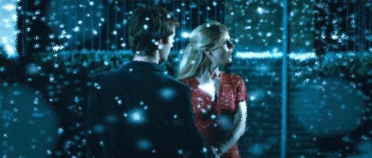

看“A Year Without Love”的晚上，在网上偶遇久未联络的朋友，说她正要看“Cashback”，于是先去土豆上看了它的短篇，之后用驴子下到电影版，选个周末的晚上和依树一起静静地看了。看完去豆瓣标注的时候，发现看过的人数已过千，概叹这样一部小成本电影也能引起如此多的关注，多半还是因为网上对于其裸露镜头的宣传吧。
短片是让人惊艳的。一开始镜头顺着天花板移动，背景是嗡嗡的低沉的噪音，间杂超市收银台扫条形码的声音，很快带你进入同男主角相似的失眠症的半梦半醒状态。镜头继而下移，转向纵深的超市货架，缓缓前行。两旁重复的商品整齐堆放着，一个无眠而又无聊的夜。 深夜的超市，因为不同原因来超市上夜班的人，各有各排遣无聊打发时间的方式。而我们男主角的方式却是惊人的，时间在他那里可以停滞，只要他愿意。停下来停下来，所有周围的一切，包括来购物的各式女人。短片中最惊艳的镜头也在此刻出现了，他缓缓解开她们的衣衫，一个个静止的胴体在他眼前一一浮现，他于是用画笔从容地记录下来，再将她们的衣服穿好，回复到原来的状态。在他一个简单的手掌相的小动作后，时间又恢复运转，好像什么都不曾发生。 这样凝固的美，和穿行于凝固时空的幻想，加上蒙太奇的镜头语言，主人公冷静到快要凝固的独白，造就了这一完美的短片，让肖恩·埃利斯在12个国际电影节上获得了最佳短片奖。值得一提的是那些香艳的身体出演都来自于像Keeley Hazell这样的名模，说它是视觉盛宴也不为过。 电影版“Cashback”一分不差移植了短片的同时，加上了爱情的主题，很多人会说它俗套，但我却不觉得，即使它确实比短片的纯粹感要差掉好多，但“Cashback”的梦幻视觉正和爱情很贴切，很搭调，最后的完美结局也延续了短片尽善尽美的完美主义风格，为本有些清冷的失眠故事增添了些许温馨。“Sometimes love is hidden between the seconds of your life.” 影片摄影也延续了短片的风格，放慢，无声，倒退，旋转……意识就这样在静止中穿行。最后，两人在静止的雪夜，凝固的雪花中奔跑的画面真的是把我折服了，堪称又一经典，为此我还是给电影版打上了和短片一样的力荐。